/* max-pinckers - proofs */
11 plates. Deterministic overlays rendered by the composition-analysis skill.
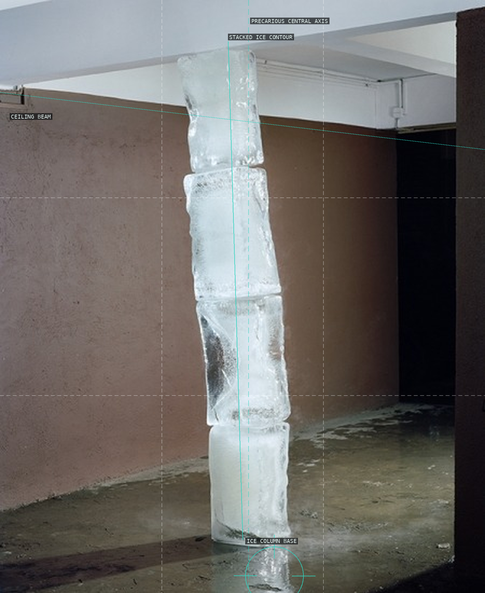
01-ice-pillar
Ice, beam, and a near-central axis make balance provisional.
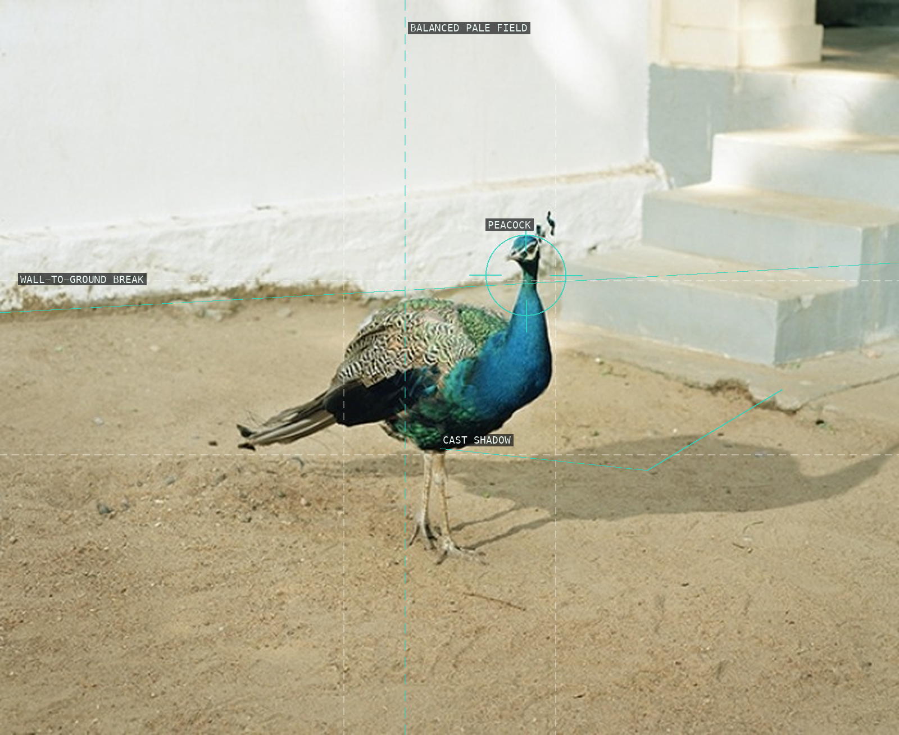
02-peacock
A peacock and shadow puncture a pale courtyard.
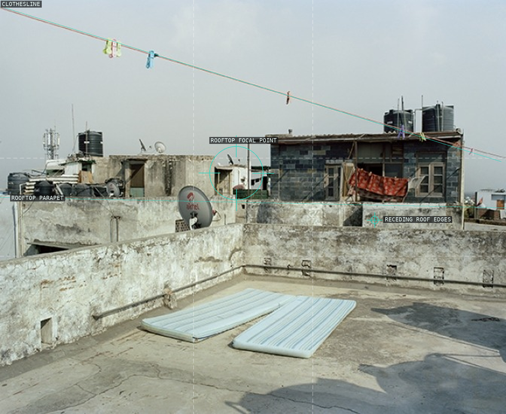
03-rooftop-mattresses
Clothesline, parapet, and mattresses hold a spare roof plane.
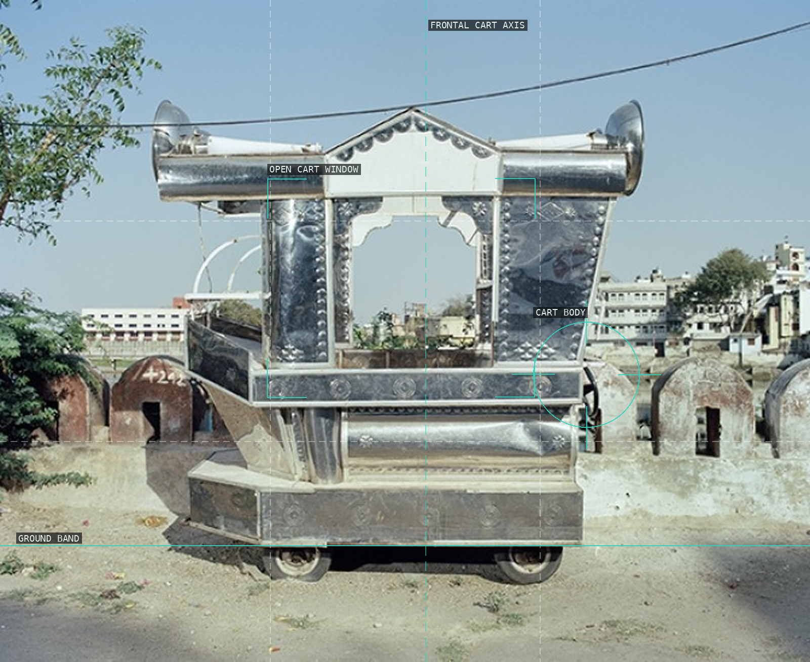
04-ceremonial-cart
A frontal cart reads as a reflective prop in open ground.
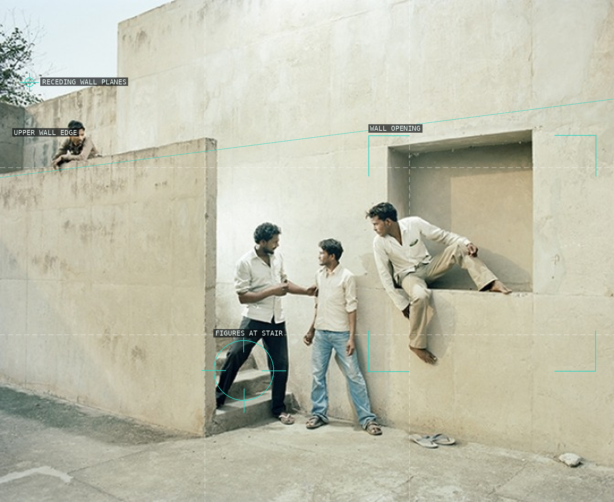
05-men-at-concrete-wall
Wall planes and openings sequence a group of figures.
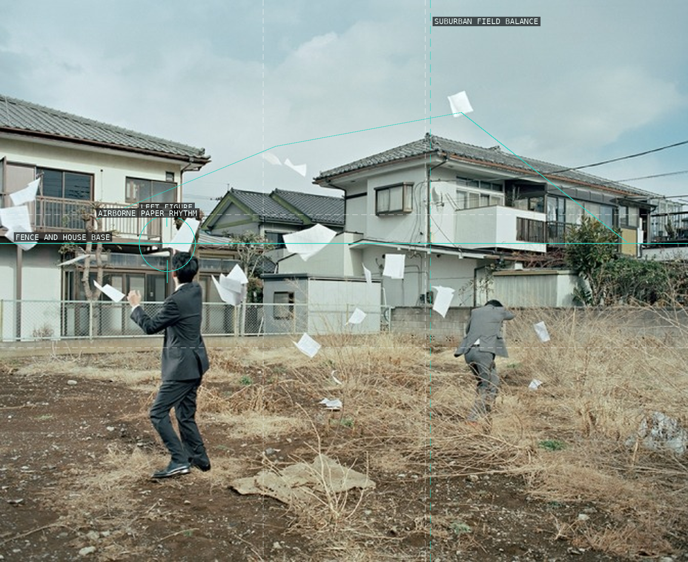
06-papers-in-suburb
Airborne papers distribute action across a suburban field.
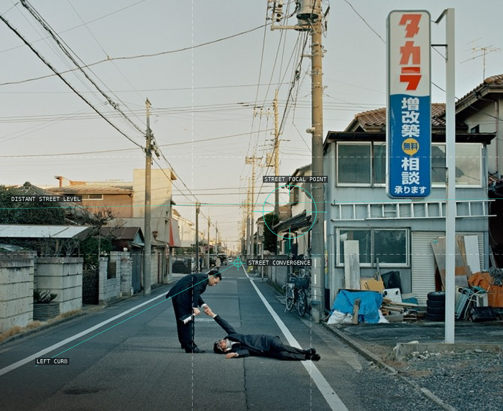
07-figure-in-street
A curb and long street perspective frame a bodily encounter.
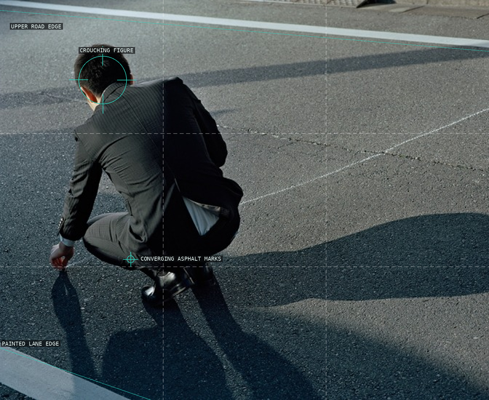
08-fallen-figure
Body, road edges, and shadows make competing directions.
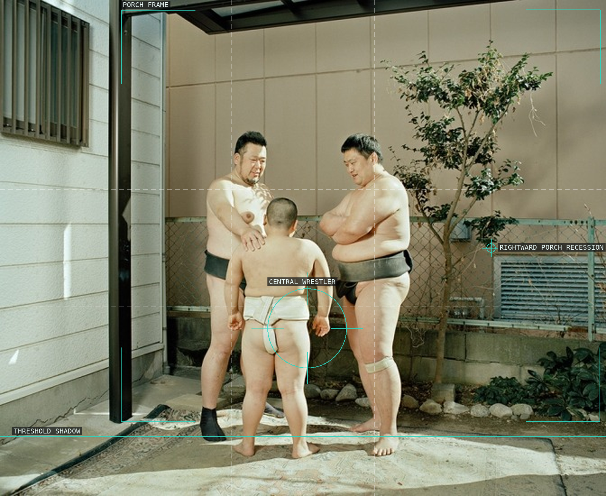
09-shadow-street
A porch frame contains three wrestlers and a threshold.
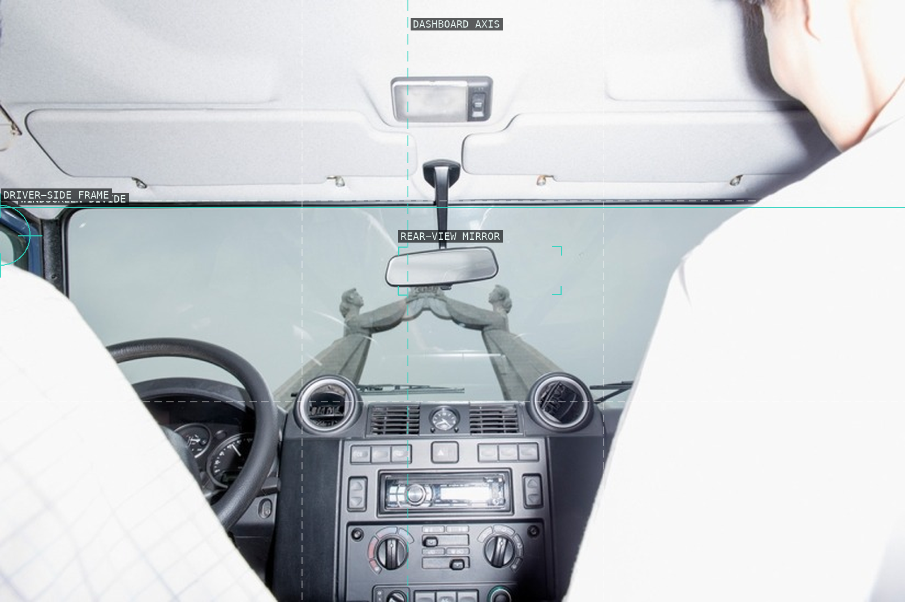
10-car-mirror
Dashboard, windscreen, and mirror layer viewpoints.
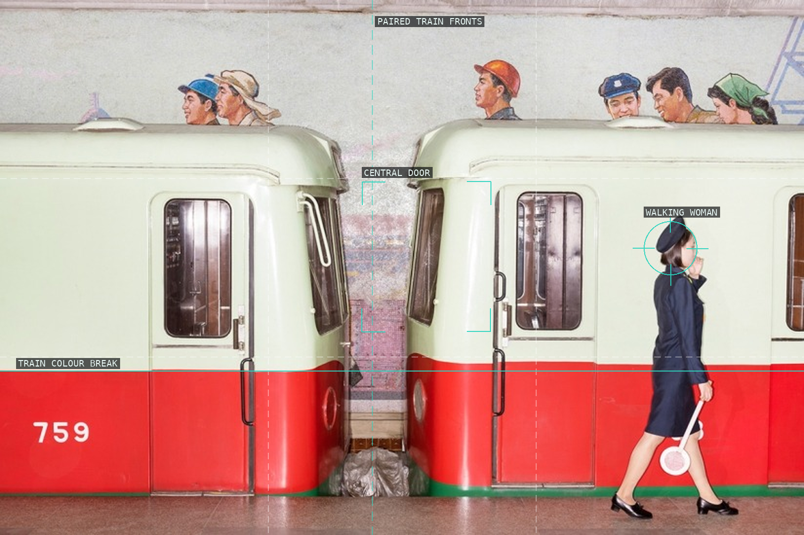
11-subway-platform
Paired train fronts are broken by one walker.